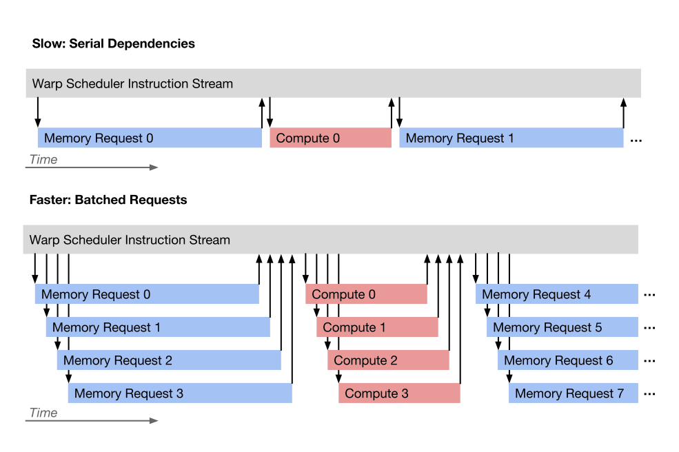
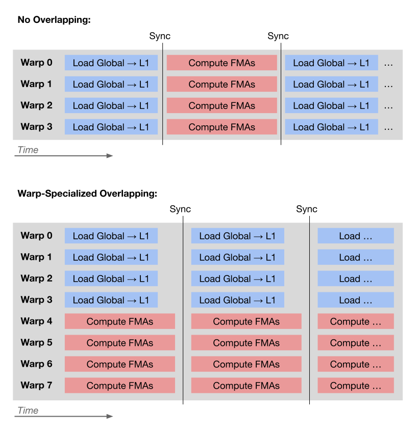
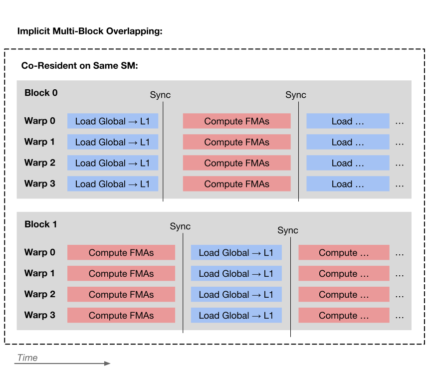
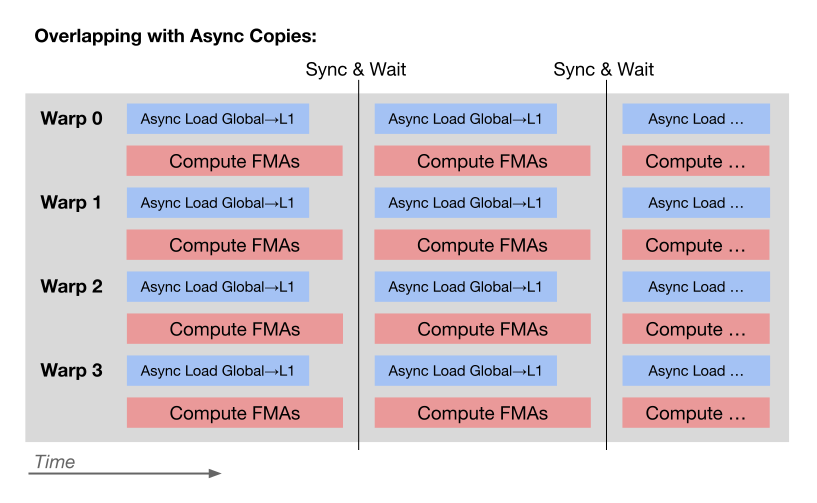
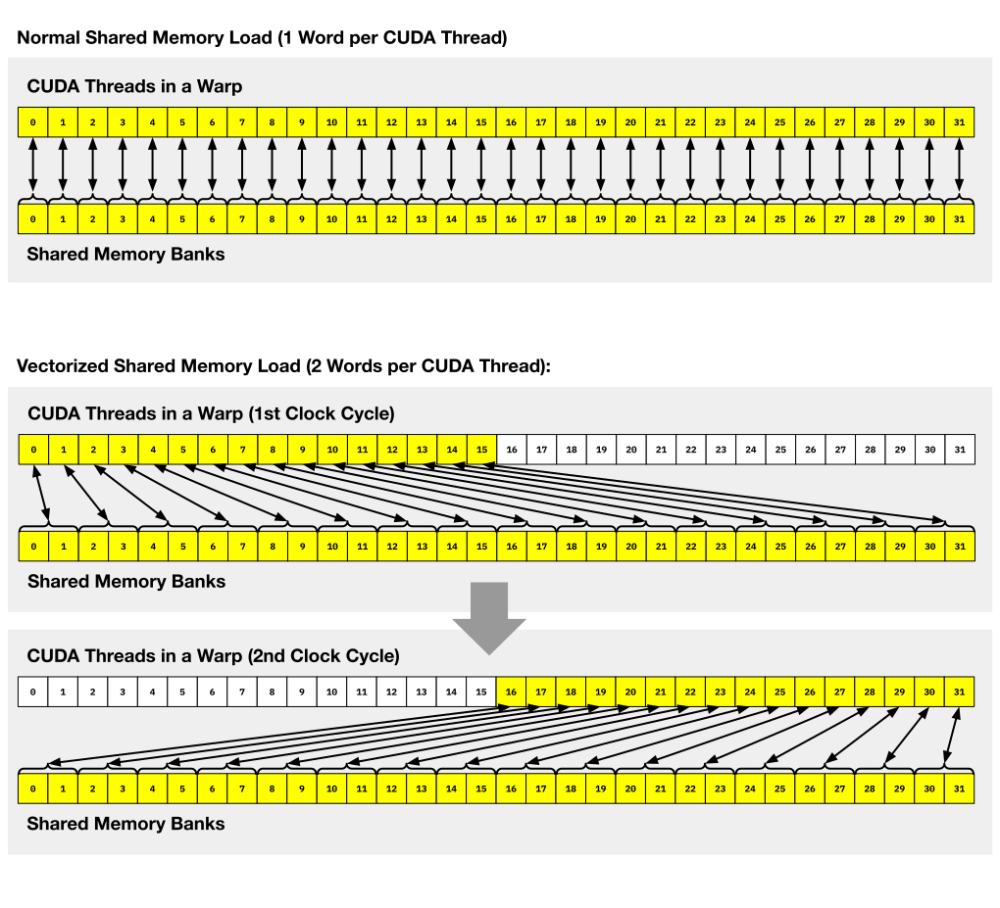
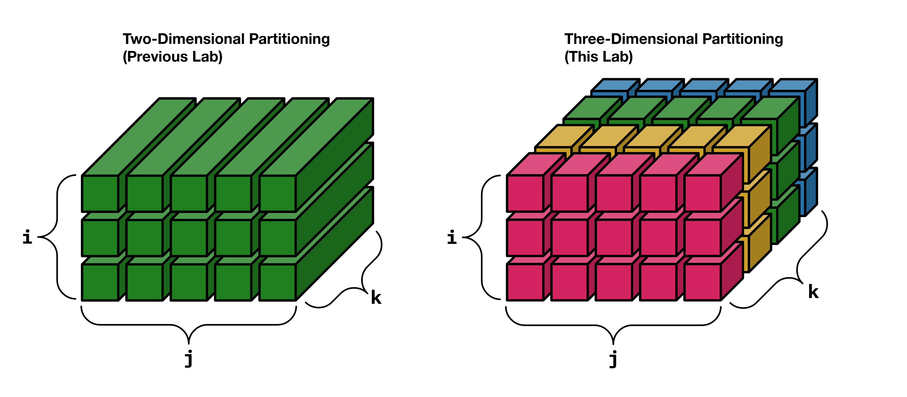
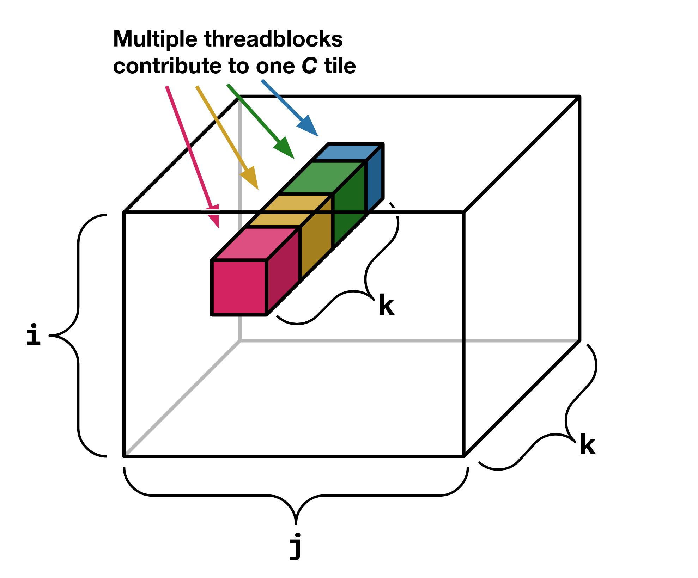
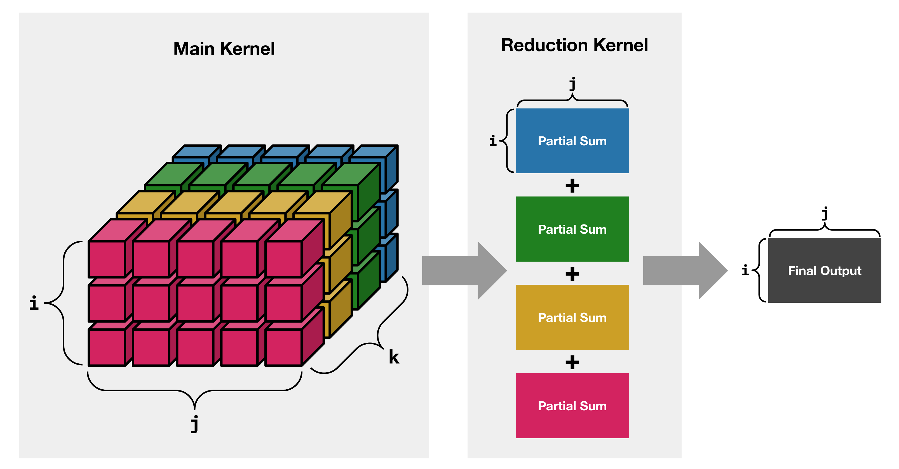

Lab 5: Matrix Multiply – Improved Scheduling
Prologue: Logistics
Due Dates
For this lab, you’ll be turning in the following deliverables:
-
Checkpoint: Due Monday, October 7, 11:59pm (Gradescope)
-
Final Submission: Due Tuesday, October 15, 11:59pm (Gradescope)
Note the unusual schedule for the final submission: to accommodate the fact that we won’t be holding live lab the week of October 14, Labs 5 and 6 will each span roughly a week and a half.
See the “Deliverables” section at the end of this document for more information on what you’ll be turning in.
Starter Code
You can get the starter code for this lab by cloning the lab repository:
Introduction
Goals for This Lab
In Lab 4, we started developing an implementation of matrix multiplication, and looked at how to design our matrix multiplication kernel to exploit data reuse at the level of the L1 SRAM and the register file. In this lab, we’ll be optimizing our implementation further, mostly by improving the scheduling of our computation to increase hardware utilization.
This lab has two parts:
-
First, we’ll try to improve the performance of our kernel on the
3072 * 3072 * 3072problem size that we’ve already seen. This part of the lab will be relatively open-ended, but we’ll have some suggestions for things you might want to try. -
Second, we’ll extend our implementation to be better at handling varying problem sizes, and analyze the ways in which problem size affects performance.
Part 1: Improving Performance
Our first goal in this lab will be to improve the performance of our implementation from Lab 4, as measured in the same setting in which we previously tested it: multiplying square matrices with side length 3072. Our goal will be to reduce our kernel’s run time to under 7 ms:
Deliverable: In the file
matmul_2.cu, implement the functionsmatmul_improvedandlaunch_matmul_improvedso that they can complete the3072 * 3072 * 3072benchmark in 7 ms or less. You can feel free to use any techniques you like to try to achieve this run time target.
(If your implementation from Lab 4 already runs in under 7 ms, you don’t need to do anything, although we encourage you to try to optimize it further if you want.)
Depending on exactly how you wrote your implementation for Lab 4, your kernel’s run time may be bottlenecked on different things. We don’t know exactly what you’ll need to do to make your specific implementation run faster, but we do have some suggestions for things you can try that may help.
Suggestion: Revisiting Issues from Lab 4
In Lab 4, we discussed a number of factors that could affect the performance of your kernel. Before trying any more sophisticated techniques to improve performance, you may want to check that your kernel is already doing well according to these criteria:
-
Maximize data reuse: Try to tune the numerical parameters of your kernel so that you minimize the number of global-to-L1 and L1-to-register loads you need to perform.
-
Avoid register spills: Stack variables can spill from registers to local memory if they exceed the capacity of the register file, or if you access them in the wrong way (see “Using Registers Effectively”).
-
Avoid bank conflicts: Whenever multiple lanes in a warp try to simultaneously access different shared memory addresses mapping to the same word index mod 32, you will pay a performance penalty (see “Using L1 Effectively”).
-
Avoid touching multiple cache lines: Whenever multiple lanes in a warp try to simultaneously access addresses on different L1 cache lines (when using the L1 SRAM as an implicit cache), you will pay a performance penalty (see “Using L1 Effectively”).
Suggestion: Hiding Memory Access Latency
In Lab 4, we mostly discussed the bandwidth of different memory resources (DRAM, L1) as a limiting factor in determining the performance achievable with different kernel designs.
Orthogonal to bandwidth, it is sometimes also important to consider the latency of individual memory requests. As a general heuristic, for GPUs:
-
Requests to global memory typically complete with a latency of hundreds of cycles.
-
Requests to L1 typically complete with a latency of dozens of cycles.
(Frustratingly, precise values for these latency numbers are difficult to find online. The course staff are currently in the process of trying to conduct experiments to measure them empirically for our particular GPU.)
The fact that memory requests execute with high latencies means that it’s important to not create long chains of serial dependencies between small memory requests and small units of computation. Instead, it’s better to fire off a batch of memory requests all at once, and then compute on its results all at once.

Concretely, this means that if you’re explicitly loading data from global memory to shared memory in your kernel, you may want to consider loading data from multiple positions along the k dimension all at once, rather than loading single columns/rows of the A/B matrices at a time.
If you’re already loading from multiple k positions at a time, you may want to think about what benefits that design might be providing, and how you should set your kernel’s numerical parameters so that you minimize latency overheads while also making effective use of the SM’s limited shared memory capacity.
Suggestion: Overlapping Data Movement and Computation
Memory requests and floating-point operations make use of separate physical resources, and are able to execute simultaneously. To make the most effective use of the hardware, it is desirable to overlap memory requests with computation as much as possible.
The compiler will generally do a good job of scheduling instructions to overlap L1-to-register loads with computation wherever possible, by leveraging ILP. However, overlapping global-to-shared-memory data movement with computation can be trickier, because writing to shared memory typically involves explicit synchronization with __syncthreads(). If you’re not careful, writing code using the straightforward design pattern of “load to shared memory, synchronize, compute” will erase all opportunities for overlapping.
There are three main strategies you might consider pursuing to overlap loads from global memory with computation in your matrix multiply kernel.
The first is to use different warps to carry out different tasks. You could program your kernel so that some warps in each block are responsible solely for loading data from global memory to L1, while other warps in the block are responsible solely for performing computations on data already in L1. Because warps run concurrently with respect to each other, performing data movement and computation on different warps will result in those operations being overlapped. This technique is sometimes known as “warp specialization”:

If you do adopt such a warp-specialized design, you will likely need to double-buffer the storage for your A and B tiles, to avoid overwriting data while you’re still computing on it.
The second strategy is to rely on the fact that under certain circumstances, multiple blocks can be scheduled on a single SM simultaneously. If you have two blocks running on each SM, there is a good chance that as the SM settles into its steady-state behavior, each block’s computation will run opportunistically while the other block’s warps are stalled waiting on loads from global memory.

Achieving overlapping by running multiple blocks on each SM may be easier to program than writing an explicitly warp-specialized kernel, but it gives you less direct control; in particular, it can be hard to guarantee that multiple blocks of your kernel invocation will fit on a single SM. If you choose to go this route, it may be helpful to keep in mind that in order for two blocks to be scheduled on the same SM, each block must use less than half of the SM’s shared memory and register capacity. To hint to the compiler that you want it to allocate registers in a way which leaves room for at least two blocks per SM, you can pass a value of 2 as the second argument to __launch_bounds___(...). You can check how many blocks of your kernel invocation can run on a single SM using the CUDA API function cudaOccupancyMaxActiveBlocksPerMultiprocessor.
The final strategy you might adopt for overlapping data movement and computation is to use the relatively new “async copy” instructions introduced in NVIDIA’s Ampere generation of GPUs (we are using an Ampere-generation GPU). Async copy instructions are like ordinary load instructions, with two key differences:
-
Async copies can transfer data directly from global memory to shared memory, without going through registers.
-
As the name suggests, async copies execute asynchronously. To be sure that the data transfer initiated by an async copy instruction has completed, you need to execute an explicit “wait” instructions which blocks on completion of the copy.
Unlike the prior two overlapping strategies discussed in this section, by using async copies you can overlap data movement and computation without any warps ever being stalled on memory requests. Because register space is a precious resource, and because every warp consumes register space whether it’s currently executing or not, reducing the number of warps required to implement overlapping can potentially deliver significant improvements in efficiency.

Similarly to the warp-specialized overlapping design, when using async copies to implement overlapping you will likely need some kind of double buffering.
In the starter code, we’ve provided two functions which you can use to access the hardware’s async copy functionality1:
-
cp_async4, which initiates an asynchronous copy of 4 words (16 bytes) per CUDA thread from an address in global memory to an address in shared memory. The source and target addresses must each be 16-byte aligned. -
async_memcpy_waitall, which blocks on completion of all prior async copy operations initiated by the current CUDA thread. Note that this does not guarantee completion of any copies initiated by other CUDA threads; to synchronize across CUDA threads, you still need to separately call__syncthreads();.
Suggestion: Vectorized Loads
So far in this course, we’ve always loaded data from memory to registers in denominations of 1 word (4 bytes) per CUDA thread. However, the hardware also supports loading 2 words (8 bytes) or 4 words (16 bytes) per CUDA thread in a single instruction. This applies both when accessing global memory and when accessing shared memory.
These wide load instructions are known as “vectorized loads,” and using them can both improve global memory bandwidth utilization and reduce instruction issue overhead (Source). Reducing instruction issue overhead for loads from shared memory is especially important in the inner loop of a matrix multiply kernel, where every cycle not spent issuing FMA instructions is a cycle wasted.
You can access vectorized load instructions by using the special built-in float2 and float4 types, which represent a vector of 2 floats and a vector of 4 floats, respectively. To perform a vectorized load, just cast the source pointer to a pointer to the appropriate vector type:
float *buf = /* ... */;
int32_t idx = /* ... */;
float4 data = *reinterpret_cast<float4*>; // note: must be aligned!
When performing a vectorized load, the address you load from must be aligned to the width of the vector type. You can access the individual word-sized values inside the vector types using the fields .x, .y, .z, .w (in that order).
When using vectorized loads to access shared memory, you may wonder about the interaction between vectorized loads and bank conflicts. After all, strided access patterns like the following will typically cause bank conflicts:
float *buf_in_shmem = /* ... */;
// 2-way bank conflict on every even-numbered bank:
float x = buf_in_shmem;
// 2-way bank conflict on every odd-numbered bank:
float y = buf_in_shmem;
You may ask: is loading a float2 from shared memory fundamentally doing the same thing as the code above, and therefore incurring a 2-way bank conflict? Do we get a bank conflict when we run code like the following?
float *buf_in_shmem = /* ... */;
// bank conflict? (Spoiler: no!)
float2 xy = *reinterpret_cast<float2*>;
The short answer is: no, vectorized loads do not incur bank conflicts in cases like the above, where all the lanes in a warp access contiguous addresses. Rather, the L1 SRAM can first spend one cycle servicing the first 16 lanes’ requests, and then spend a subsequent cycle servicing the next 16 lanes’ requests.2 On each cycle, we use every bank of the L1 SRAM exactly once, so we can make use of the L1’s full bandwidth with no conflicts.

Finally, note that, thanks to compiler optimizations, your code may already implicitly contain vectorized loads. To see if the compiler is inserting vectorized loads into your program, look for instructions like ld.shared.v2 and ld.shared.v4 in the generated PTX.
Suggestion: Block Scheduling for L2 Reuse
When your kernel invocation has many more blocks than SMs, not all blocks will run at the same time. Instead, the blocks launched by your kernel invocation will go into a queue, and will only begin executing when resources become available. Although CUDA provides no formal guarantees about the order in which blocks will be scheduled, in practice blocks are scheduled in ascending order of linear block index (with blockIdx.x being the fastest-moving dimension).
By thinking about the order in which blocks are scheduled on the GPU, you may be able to find ways to improve L2-level data reuse by designing your matrix multiplication kernel such that it is likely that blocks running at the same time will access the same data in L2 as often as possible. To do so, you would need to change how each block in your kernel computes its logical i, j, k indices based on its blockIdx.
Questions
Once you’ve implemented your matmul_improved kernel and achieved a run time under 7 ms on the 3072 * 3072 * 3072 problem size, you can answer the following question:
Question 1 for final write-up: What was the best run time you were you able to achieve on the
3072 * 3072 * 3072problem size? What percentage of peak FLOP/s utilization does that correspond to? What techniques did you try to use to optimize your kernel, and which of those did you find actually deliver a speedup in practice? Where did the biggest wins come from? Did you encounter any interesting bugs along the way? Are there any remaining puzzles about your kernel’s performance that you haven’t yet resolved?
Part 2: Handling More Problem Sizes
So far, we’ve focused on optimizing the performance of our kernel for just a single problem size: 3072 * 3072 * 3072. In real applications, matrix multiplications can consist of a wide range of different problem sizes, some of which have fundamentally different performance characteristics than the problem size we’ve been studying until now.
In this section, we’ll be extending our kernel to be able to handle a greater variety of problem sizes efficiently. Designing matrix multiplication algorithms to be robust to truly arbitrary problem sizes is an entire art unto itself, and we’ll be investigating it in more detail in Lab 6. For now, we’ll be focusing on just this restricted set of problem sizes:
size_i | size_j | size_k |
|---|---|---|
3072 | 3072 | 3072 |
512 | 3072 | 3072 |
256 | 3072 | 3072 |
128 | 3072 | 3072 |
64 | 3072 | 3072 |
32 | 3072 | 3072 |
16 | 3072 | 3072 |
1 | 3072 | 3072 |
256 | 256 | 256 |
256 | 256 | 1024 |
256 | 256 | 8192 |
128 | 128 | 32768 |
(You can also find this table in machine-readable JSON format in the file sizes.json included with the starter code.)
Analysis
Before we start trying to optimize our code for these problem sizes, it may be helpful to have the answers to a few questions in mind:
Question 2 for final write-up: For each of the problem sizes in this lab, walk through the following analysis (you’re welcome to use a script to automate the calculations!):
How many total FLOPs does the problem size require us to perform?
Considering (1), what is the fastest we could process this problem size if FLOPs were the only constraint?
How many unique bytes of data does this problem size require us to load from / store to DRAM?
Considering (3), what is the fastest we could process this problem size if data movement were the only constraint?
Considering (2) and (4) together, what lower bound does this imply for the actual run time of our algorithm? Is the workload compute-bound or bandwidth-bound?
Considering (5), what is the maximum TFLOP/s we could achieve on this problem size? (This is just (1) divided by (5).)
In your
matmul_improvedimplementation from Part 1, how many threadblocks will be launched for this problem size?How does (7) compare to the number of SMs on the machine?
What might (8) imply about how your
matmul_improvedkernel could be expected to perform on this problem size?How does your
matmul_improvedkernel perform on this problem size in reality? How does that compare to (6) and to your hypothesis in (9)?
Implementation
For some of the problem sizes we’re considering, it’s difficult to fill the whole machine with useful work if each threadblock is responsible for an independent subset of the output matrix C. The fundamental problem is that the C matrix in some problems (e.g. the 128 * 128 C matrix in 128 * 128 * 32768) simply isn’t large enough to cover it with as many tiles as we have SMs.
To address this, we need to somehow adjust our partitioning scheme so that we are able to launch more parallel threadblocks than we have output tiles, in order to give each SM enough work to do. Recalling our three-dimensional visualization of the i, j, k iteration space, one relatively simple way to create more units of parallel work is to split the iteration space along the k dimension:

Perhaps unsurprisingly, this partitioning strategy for matrix multiplications is often referred to by the name “split-k.”
Of course, splitting on the k dimension introduces a complication we didn’t previously have to deal with: now there can be multiple threadblocks computing different additive contributions to the same output tile.

That means that in order to implement our split-k partitioning strategy, we’re going to need to somehow perform a reduction to combine the partial sums contributed by each threadblock.
There are many ways to perform reductions on GPUs in general, and there are even many types of reduction strategies which are used specifically in the context of matrix multiplication. Some matrix multiplication reduction strategies in contemporary use are quite complicated, and involve communication between actively-running threadblocks in a single kernel. However, it’s possible to do quite well using a relatively simple approach.
The simple approach we suggest you follow in this lab is to adopt a two-kernel design:
-
The main kernel computes the partial sums contributed by each threadblock, without reducing them.
-
The reduction kernel computes the final output by combining the partial sums.

The advantage of this two-kernel design is that it requires no intra-kernel synchronization. In both the main kernel and the reduction kernel, each CUDA thread can write its output to an independent location in global memory. The only synchronization required is that the reduction kernel must not start running until the main kernel has completed, but (as you might recall from Lab 3) that is already guaranteed by default by the kernel launch mechanism.
With this design, we’re ready to extend our implementation to handle more problem sizes:
Deliverable: In the file
matmul_2.cu, implement the functionlaunch_matmul_improved_reduce, and any associated CUDA kernels, to be able to efficiently process the full suite of problem sizes we’re considering in this lab. Specifically, for each problem size, aim to achieve at least 20% of the theoretical maximum throughput you computed for that problem size in Question 2, except for the problem sizes256 * 256 * 256and256 * 256 * 1024.
(Tip: You can find a machine-readable JSON report containing all benchmark results in ./telerun-out/<job_id>/.)
When you write your implementation, you will probably find it necessary to have access to a temporary buffer of GPU memory in which to store the partial sums. To support this, the starter code will provide your launch_matmul_improved_reduce function with a pointer to a pre-allocated workspace buffer. The size of this workspace buffer is up to you; its size (in bytes) is determined based on the output of the function get_workspace_size.
Questions
Once you’ve finished your implementation, you can answer the final question of the lab:
Question 3 for final write-up: What fraction of theoretical peak throughput were you able to achieve for each problem size? How does the performance of your implementation for Part 2 compare to your original
matmul_improvedkernel from Part 1? What numerical parameters did you need to define for your implementation, and how did you go about setting them? What performance did you achieve on the specific problem sizes256 * 256 * 256and256 * 256 * 1024, and what, if anything, do you think might make those problem sizes different from the others? Did you encounter any interesting bugs along the way?
Deliverables
Checkpoint (Due Monday, October 7, 11:59pm)
All we ask for the checkpoint for this lab is that you see how far you can get in optimizing your implementations for Parts 1 and 2. Just let us know how you’re doing on the assignment, and you’ll receive full credit.
On the Gradescope assignment for “Lab 5 Checkpoint,” (link) submit your answers to the prompts checking in about how you’re doing with the lab.
Final Submission (Due Tuesday, October 15, 11:59pm)
On the Gradescope assignment “Lab 5 Final,” (link) submit your completed code for matmul_2.cu, as well as a PDF write-up containing your answers to Questions 1 - 3.
CUDA C++ includes a built-in high-level interface to access async copy functionality (Reference), but it can be quite unreliable. In particular, if you pass the high-level async copy API an unsupported size in bytes, it will silently degrade to use an ordinary synchronous copy instruction. In the starter code, we’ve exposed async copies to you using inline PTX in order to take more direct control.
Our exact description of what the hardware is doing here is an educated guess on our part; to the best of our knowledge there is no documentation on precisely how NVIDIA GPUs decompose vectorized accesses into shared memory transactions.